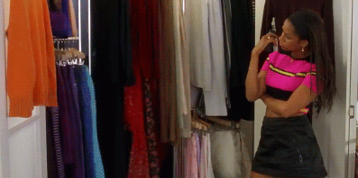

481 public high schools · 2018–2019 handbooks
Clothes We Wear
Which clothes do school dress codes prohibit—and who are those clothes marketed to? Explore all 41 items in the original study.
Percentage of High Schools Which Prohibit Clothing Items
Marketed to boysgirlsany
Select a clothing label to see the original count and classification.
Study methods and what “short” means
This is the original 2018–2019 research snapshot, published in February 2019. The 481 public high schools were selected opportunistically from schools with available handbooks; this is not a representative estimate for every US school. Uniform policies, magnet schools and boarding schools were excluded.
This chart covers items worn on the body: shirts, pants, shorts, skirts, dresses and undergarments. The authors classified marketing using Nike, American Eagle, Adidas, Forever 21 and Urban Outfitters: an item was primarily marketed to one gender when it appeared in more than twice as many stores for that gender. These are the study’s marketing categories, not rules about who can wear an item.
Counts, rounded percentages and bins are preserved from the original CSV, including the empty 50–60% bin. Download the original chart data. Read the full original methods.